Models of the ventral stream, and what networks compute
Reader-friendly version of the 51 lecture slides: the lecture content in normal flow, with figure descriptions and data tables where the figure carries data. Open the presentation.
Slide 1

Models of the ventral stream, and what networks compute
Slide 2
Where we left off: one filter, slid over the image
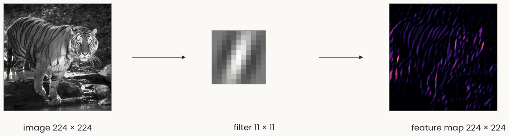
The tiger photograph in gray levels, 224 by 224, an arrow to one 11 by 11 vertical Gabor filter, an arrow to the feature map, 224 by 224, bright where the image has vertical stripes. One set of weights is reused at every position, so shifting the image shifts the map.
Open full-size figure
- A filter, a small grid of weights, a template like a simple cell's receptive field, is slid over the image; at each position the dot product, then ReLU: a feature map
- One set of weights, reused at every position (weight sharing), so the layer has few weights. Shift the image and the map shifts with it
Slide 3
Where we left off: simple and complex cells

Three columns of icons summarizing Hubel and Wiesel's V1: on the left an on-center and an off-center circle for retinal and LGN cells; in the middle an oriented bar at one position for a simple cell; on the right an oriented bar with arrows showing it can sit anywhere in the field, for a complex cell. The point: a weighted sum builds selectivity, a pooling builds tolerance.
Open full-size figure- Hubel and Wiesel's two cell types in V1: the simple cell, a weighted sum, selective for an oriented bar at one position; the complex cell, which pools simple cells and responds to the same bar anywhere nearby
Slide 6
Complex cells, again: one orientation, anywhere nearby

Computed on model cells. Left: the bar has passed all five fields. Right: five overlapping bumps, one per simple cell, each covering a narrow range of positions, and the complex cell's broad curve covering all five with small dips between them: tolerance to position, with the orientation preference of its inputs.
Open full-size figure- A complex cell sums five simple cells of one orientation, their fields side by side
- Whichever simple cell the bar falls on, the complex cell fires
- Tolerant to position, selective for orientation: this is pooling
Slide 7
Cortical columns: every orientation, at every position

Hubel and Wiesel's ice-cube model of primary visual cortex (V1), as drawn in Kandel, Schwartz and Jessell's Principles of Neural Science. A block of cortex is shown in perspective, with cortical layers I to VI marked down its left side. The block is split into two halves, a left-eye and a right-eye ocular dominance slab. Its top surface is tiled with orientation columns, color-coded by the legend: blue for horizontal, green for one oblique, yellow for vertical and red for the other oblique. Dashed cylinders inside each slab are the blobs. The point: one small block holds every orientation for both eyes, and the block repeats across the whole visual field.
Open full-size figure- A column: a stack of cells through the six layers of cortex that prefer one orientation. Hubel and Wiesel's ice-cube model: a 1 mm block of V1 holds a column for every orientation, for each eye; the block repeats across the visual field
- Nothing slides in cortex. Each position has its own cells, with their own synapses (connections, each with a weight). We call this replication; the network uses sharing
- Both end up with the same template at every position. The network stores one filter; cortex has a separate copy at each position. How those copies come to match is not known
Slide 8
The hierarchy continues beyond V1
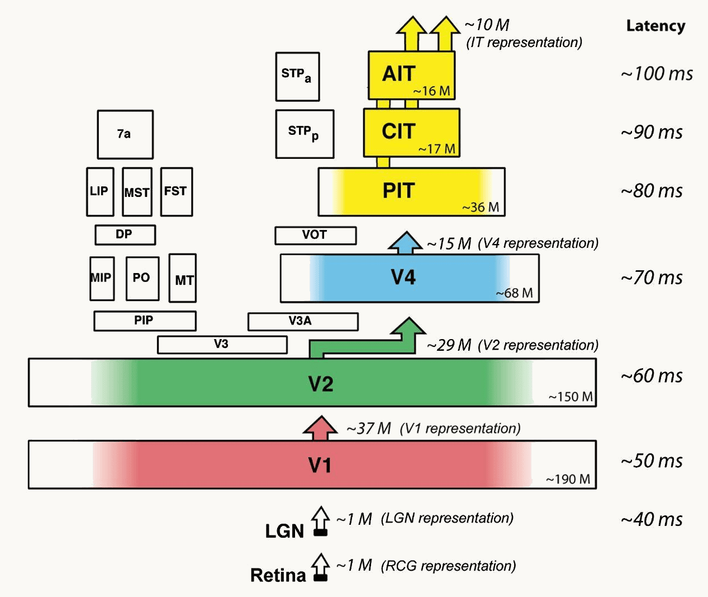
DiCarlo, Zoccolan and Rust 2012, Figure 1, right panel: the ventral-stream areas drawn as stacked boxes, retina and LGN at the bottom, then V1, V2, V4, posterior, central and anterior IT, with arrows up between them. Beside each stage its typical response latency, about 40 milliseconds at the LGN, 50 in V1, 60 in V2, 70 in V4, 80 to 100 in IT, and an approximate neuron count, from about one million to tens of millions.
Open full-size figure
- Within V1, Hubel and Wiesel found a hierarchy: center–surround → simple → complex, selectivity, then tolerance
- The ventral stream: V1 → V2 → V4 → IT (inferotemporal cortex), the chain that ends in object recognition. The working assumption: the same two steps repeat in each area
- Three kinds of evidence: anatomy orders the areas (next slide); cells prefer more complex things at each stage (the slides after); responses start later at each stage, about 40 ms at the LGN (the relay between eye and V1) to 100 ms in IT
Slide 9
Anatomy orders the areas: Felleman and Van Essen
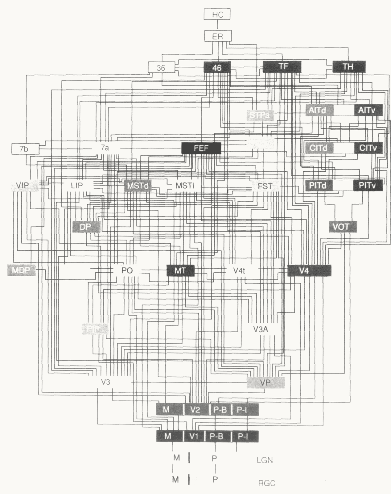
Felleman and Van Essen's 1991 diagram of the macaque visual system, in its color rendering: 32 cortical areas as colored boxes stacked in about ten levels, from the retina (RGC) and LGN at the bottom, through V1 and V2 (split into M, P-B and P-I compartments), V3, VP, V4, MT and the parietal areas, to the IT areas (PITd, PITv, CITd, CITv, AITd, AITv), area 46, FEF, TF, TH and the hippocampal areas ER and HC at the top. Black and red lines join the areas, about 300 connections in all; the dorsal areas sit on the left, the ventral areas leading to IT on the right.
Open full-size figure
- Felleman & Van Essen (1991): about 300 known connections between 32 visual areas
- Cortex has six layers, and a connection's direction is written in them: feedforward axons (away from the eye) end in layer 4 of the next area; feedback axons (back toward V1) avoid layer 4
- Ordering the areas so that every feedforward connection points up gives about ten levels, V1 at the bottom, IT, area 46 and the hippocampal areas at the top. Two main paths: the ventral stream to IT (what), the dorsal stream through MT to parietal cortex (where, how)
Slide 10
Receptive fields grow along the ventral stream

Kobatake and Tanaka (1994): receptive fields recorded along the macaque ventral stream. In the center, an outline of the cortex with dots marking recording sites, from posterior on the left to anterior on the right. A line runs from each dot to the receptive field of the cells recorded there, drawn as a square or rectangle on a small cross that marks the center of gaze. Posterior sites, on the left, connect to small squares of a few degrees close to the cross; anterior sites in inferotemporal cortex (IT), on the right, connect to large squares, the largest several times the 10-degree scale bar in the top-right corner. The point: receptive fields grow along the hierarchy.
Open full-size figure- From V1 to anterior IT, receptive fields grow from under a degree of visual angle (a thumbnail at arm's length) to tens of degrees, while the preferred stimulus changes from bars to objects
Slide 11
V4: beyond bars, non-Cartesian gratings
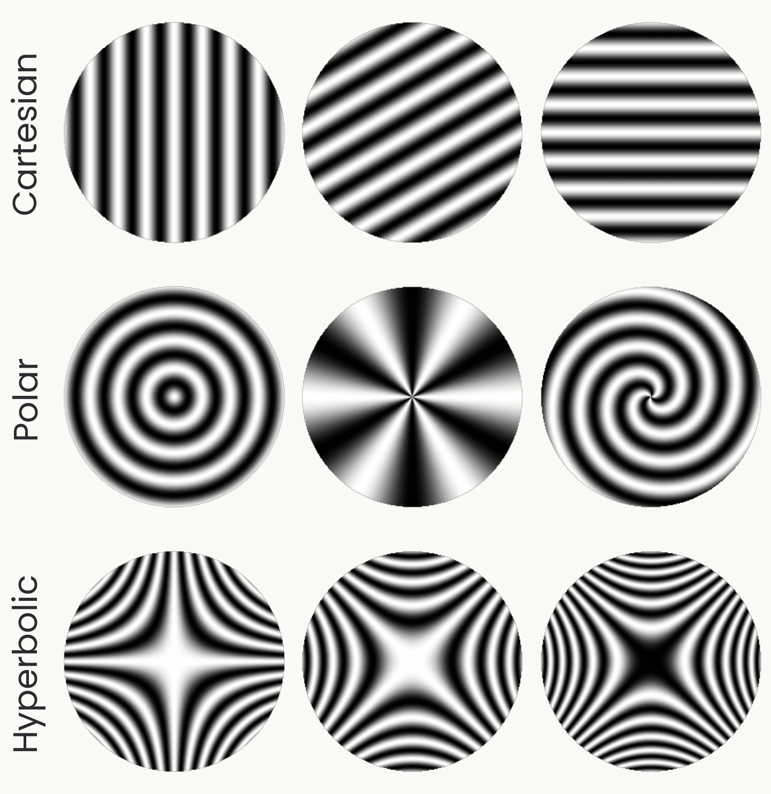
Nine circular grating patches in three rows, drawn from the stimulus formulas. Cartesian: parallel stripes at three orientations. Polar: concentric rings, radial spokes, and a spiral. Hyperbolic: saddle-shaped patterns at three rotations. Gallant and colleagues found V4 cells that prefer the polar or hyperbolic patterns to any stripes.
Open full-size figure
Drawn from the stimulus formulas; schematic
- Gallant, Braun & Van Essen (1993) showed V4 cells three families of gratings: the usual Cartesian stripes, polar ones (rings, spokes, spirals) and hyperbolic ones (saddles)
- Many V4 cells responded best to a polar or hyperbolic grating: no single oriented bar detector prefers these patterns
- Later studies of V4 found tuning for curvature, color and texture (next slides)
Slide 12
What the cells prefer, area by area
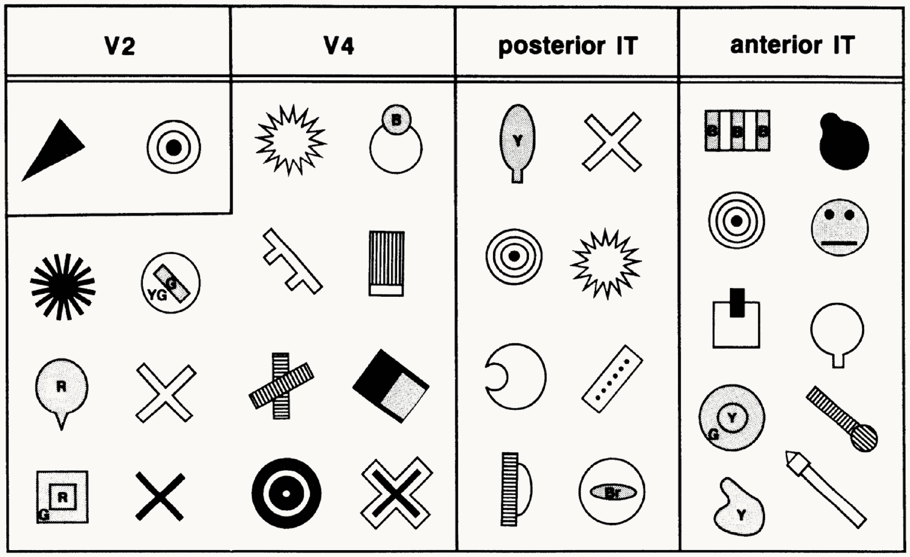
Kobatake and Tanaka's 1994 table of critical features by cortical area, four columns. V2: a triangle and a bullseye. V4: a star, a circle with a dot, a textured bar, a cross, a dark square with a corner, concentric rings. Posterior IT: a leaf shape, a cross, concentric rings, a star, a half disc, a dotted bar, a striped half circle. Anterior IT: a striped block, a dark blob, concentric rings, a cartoon face, a square with a dark bar, a circle on a stem, a flask shape, a blob, a striped bar with a ball. Preferred stimuli grow from simple patterns to object parts and faces.
Open full-size figure
- Kobatake & Tanaka (1994) reduced each cell's best object to the simplest picture that still drove it. Most V2 cells settle for a bar or a spot; the share of cells that need more grows up the stream: curves and textured shapes in V4, parts in posterior IT, faces and hands in anterior IT
Slide 13
V4: curvature at an angular position
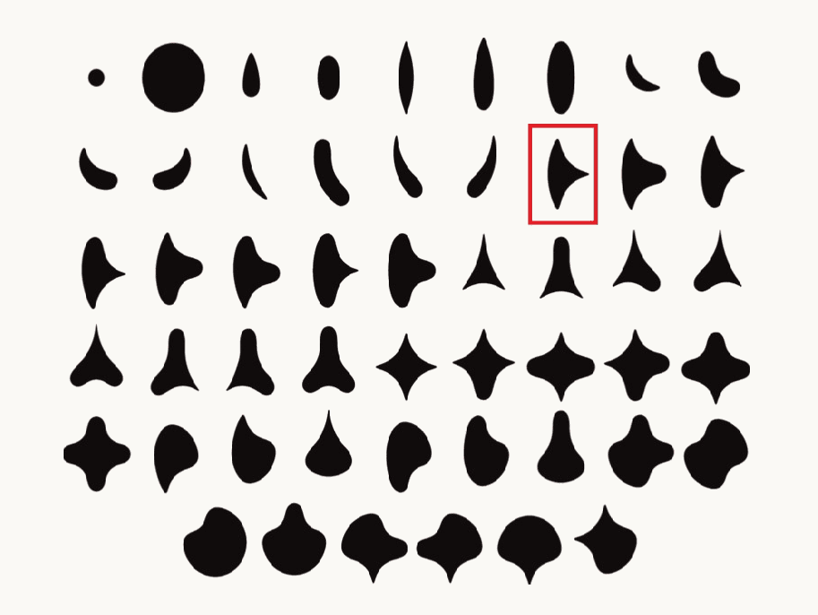
The 51 simple closed shapes used by Pasupathy and Connor in 2001, drawn as black silhouettes in six rows: a dot and a disc, ovals, crescents, teardrops, three-lobed and four-lobed shapes, and rounded forms with one sharp point. One shape in the second row is outlined in red as the example used on the next panel.
Open full-size figure
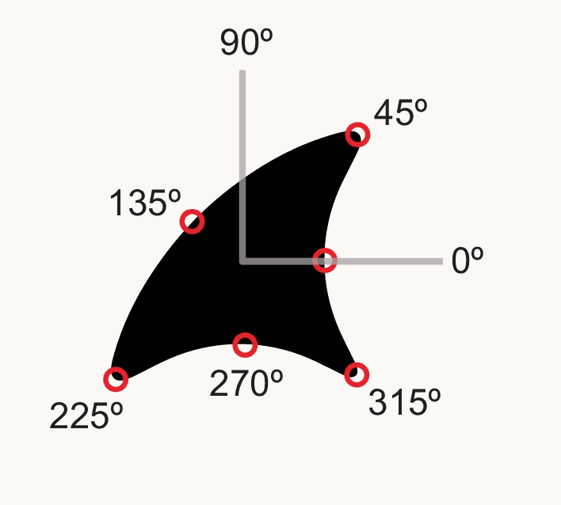
One of the shapes, a black form with two sharp convex points, drawn with gray axes through its center and red circles marking points on its boundary at angular positions 0, 45, 90, 135, 225, 270 and 315 degrees. A V4 cell's response is described by the curvature of the boundary at one such angular position.
Open full-size figure
- Pasupathy & Connor (2001) showed V4 cells 51 shapes at 8 rotations and found that a cell's response is set by the curvature of the boundary at one angular position around the shape's center, a sharp convexity at 45°, say: a part of the outline, not the whole shape
Slide 14
V2: naturalistic textures
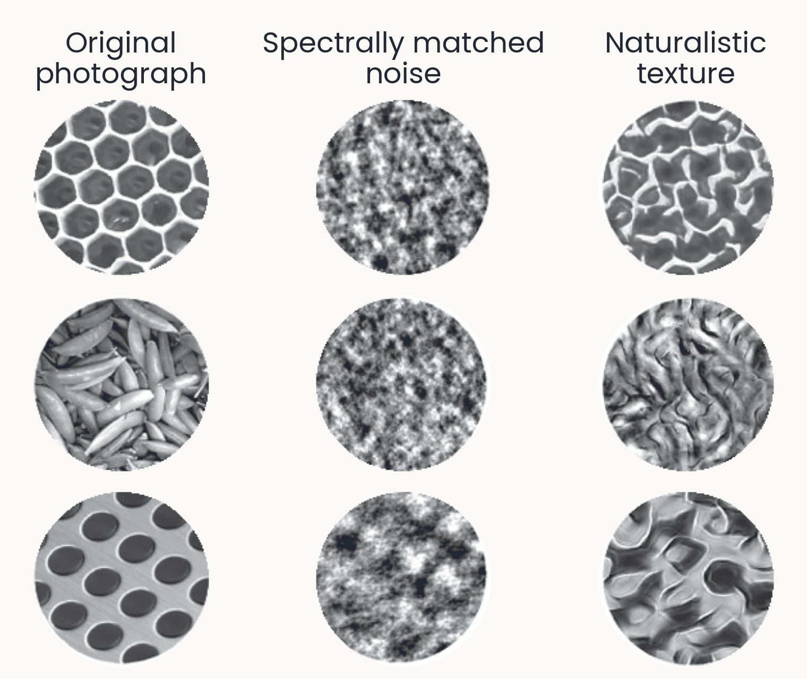
Nine texture discs in three rows: a honeycomb, a pile of pea pods and a perforated metal sheet. Left column, the original photographs; middle, spectrally matched noise, shapeless gray blotches; right, naturalistic textures that keep the cells, pods and holes as distorted but recognizable structure. Freeman et al. 2013 made the middle column by matching only the statistics V1-like filters measure, and the right column by also matching the correlations between those filters. V2 neurons respond more to the right column than to the middle one; V1 neurons respond about equally.
Open full-size figure
- Freeman et al. (2013): two synthetic versions of each photograph. Spectrally matched noise keeps the statistics of V1-like filters; naturalistic texture also keeps their correlations
- V1 responds alike to both; V2 responds more to naturalistic texture, and so do people
Slide 15
Photographs and whole-stream recordings
Twenty THINGS photographs in a five by four grid, one per object concept: an aardvark, an accordion, bananas, a bike, a butterfly, a camel, a chair, a teapot, an elephant, a guitar, a hammer, candles, an owl, a pineapple, an umbrella, a violin, a zebra, an anchor, a cake and a hard hat. THINGS has 1,854 object concepts and 26,107 photographs; these are from its CC0 subset (THINGSplus). TVSD showed 22,248 THINGS photographs to two monkeys while Utah arrays recorded V1, V4 and IT.
Open full-size figure
- THINGS (Hebart et al. 2019): 1,854 object concepts, 26,107 photographs
- TVSD (Papale et al. 2025): 22,248 THINGS photographs, two monkeys; Utah arrays (10 × 10 electrode grids) in V1, V4 and IT at once
- Triple-N (Li et al. 2026): Neuropixels probes, hundreds of recording sites on one shank, across IT
- NSD (Allen et al. 2022): 7 T fMRI in eight people, 73,000 photographs
Slide 16
From recordings to models
Stacking the simple and complex cell operations, area after area
Slide 17
Fukushima's Neocognitron (1980)

Fukushima (1980), Figure 2: the Neocognitron's layers drawn left to right as stacks of planes, the input layer U0, then US1, UC1, US2, UC2, US3 and UC3. Each layer holds several cell planes, labeled k = 1 at the top to k = K at the bottom of each stack. Lines from a small circle in one plane to a cell in the next layer show that each cell reads a small patch of the layer before; the planes shrink and the patches cover more of the input with depth. In the last layer, UC3, each plane is a single cell. The point: alternating S (template) and C (pooling) layers build a cell that responds to a whole pattern wherever it sits.
Open full-size figure- S-cells: simple cells, one template per plane (a plane is one feature map), at every position. C-cells: pool nearby S-cells of one plane
- Repeat S then C; the top responds to a whole digit wherever it sits. Trained without labels, layer by layer
Slide 18
HMAX: a hierarchy constrained by physiology
![Serre et al. 2007, Figure 1: on the left the wiring diagram of the primate visual system, dorsal and ventral streams from V1 through V2, V4, PIT and AIT to prefrontal cortex; in the middle the model, simple units (solid circles) and complex units (dashed circles) alternating from oriented S1 filters on a photograph of cows up to an animal versus non-animal classification unit, with bypass routes; on the right a table of the layers S1 to S4 and C1 to C3 with their receptive-field sizes from 0.2 to 7 degrees and their numbers of units from a million to a hundred](../images/L11/pub_serre2007_wiring_hmax.png)
Serre, Wolf, Bileschi, Riesenhuber and Poggio (2007), Figure 1, in three parts. Left: a wiring diagram of the macaque visual system, boxes for visual areas joined by arrows, split by a dashed line into the dorsal 'where' stream and the ventral 'what' stream, with V1, V2, V4, PIT and AIT highlighted in color and prefrontal areas at the top. Middle: the model, rows of solid circles (simple units) and dashed circles (complex units) alternating from oriented filters on a photograph of cows, up through orange, green and blue units, to a purple 'animal vs. non-animal' unit; light blue lines are bypass routes. Right: a table of the model layers S1, C1, S2, C2, S2b, S3, C2b, C3 and S4, with receptive-field sizes growing from 0.2 to 1.1 degrees at S1 to 7 degrees at the top, and unit counts from 10 to the 7 down to 1 classification unit. The point: each stage of the model is matched to a stage of the ventral stream.
Open full-size figure- S and C alternate, V1 to IT. S units: template matching, a convolution, like a simple cell. C units: a max, like a complex cell, for tolerance to position and scale (next slide)
- Hyperparameters (receptive-field sizes, tuning widths, pooling ranges) set by hand to match physiology, not fit to the task: "graduate student descent"
- No backprop: higher S units learn by simple unsupervised, Hebbian-like rules, picking up frequent combinations of the C features below (from orientations to corners and curves); only the readout sees labels
Slide 19
Pooling over position, and over scale
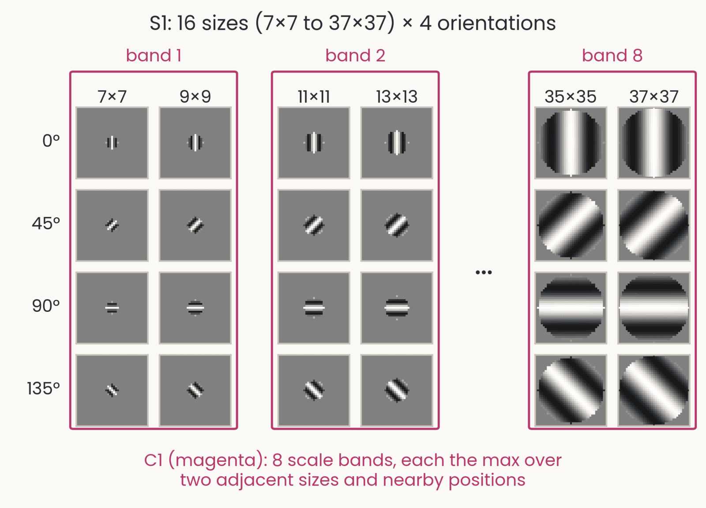
HMAX's S1 Gabor filters in a grid: rows at 0, 45, 90 and 135 degrees; columns at sizes 7, 9, 11, 13, 35 and 37 pixels, each filter drawn at its true relative size. Magenta boxes group the sizes into scale bands 1 (7 and 9), 2 (11 and 13) and 8 (35 and 37), with an ellipsis for bands 3 to 7. Caption: C1 takes the max over two adjacent sizes and nearby positions. In the full model there are 16 sizes, 7 by 7 to 37 by 37 in steps of 2, so 8 bands.
Open full-size figure
- HMAX's S1 bank: Gabor filters at 4 orientations and 16 sizes. A C1 unit takes the max over nearby positions and over two adjacent sizes: 8 scale bands
- So an object seen once at one size drives nearly the same C1 units at another size: HMAX has tolerance to scale built in
- A network has no built-in scale pooling: its size tolerance comes from the sizes in its training photographs and from data augmentation, the rescaled copies of last lecture, and it fades outside the range it saw
Slide 20
Pooling: from a map to fewer numbers
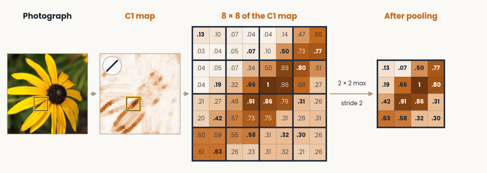
A flower photograph and one of its C1 orientation maps, with an 8 by 8 area boxed. That area as a grid of its activation values, from 0.03 to 1, divided into 2 by 2 windows with the largest value in each window in bold. An arrow labeled 2 by 2 max, stride 2 leads to a 4 by 4 grid that holds only the winning values: the map is half as wide and half as tall.
Open full-size figure
- A map says where a feature is, to the pixel; recognition needs whether, roughly where. Max-pooling keeps the largest value in each window, so a small shift of the feature gives the same answer. This is tolerance to position, as in a complex cell; HMAX's C stages do the same. Each filter's map is one channel
Slide 21
The same two steps, higher up
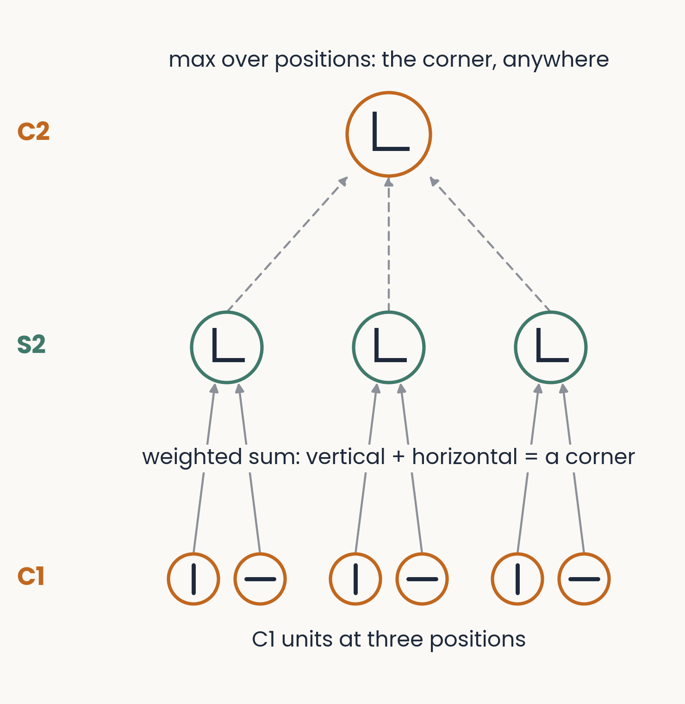
Wiring from C1 to C2. Bottom: three pairs of C1 units (orange), a vertical and a horizontal unit at each of three positions. Middle: three S2 units (green), each a weighted sum of the pair below it, tuned to a corner. Top: one C2 unit (orange), the max over the three S2 units: the corner at any of the three positions. Labels on the right name each stage.
Open full-size figure
- A simple unit above V1 (HMAX's S2) is again a weighted sum, now over complex cells: it is selective for a conjunction of oriented edges at set positions, a corner, a curve, a textured patch
- A complex unit above it (C2) pools those simple units over positions and sizes, so it responds to that conjunction anywhere in its field
- Repeat a weighted sum, then pooling, and both selectivity and tolerance grow from V2 to V4 to IT
Slide 22
S2 and C2 on a real photograph
![A black-eyed susan photograph passes through the HMAX stages from left to right. Four C1 maps, one per orientation, light up the petals that run in each direction. One S2 feature's template is tuned to 135-degree edges in its upper left and 45-degree edges along its bottom. Its S2 response map shows where that combination appears, with 6 by 6 pooling windows; pooling keeps one value per window, and C2, the maximum over all positions, is 0.689. A second row repeats this with the flower shifted 30 pixels up and 16 right: the S2 map hardly matches the first (correlation 0.04), yet C2 is 0.694, a change of 0.8 percent](../images/L12/hmax_activations.png)
A black-eyed susan photograph passes through the HMAX stages from left to right. Four C1 maps, one per orientation, light up the petals that run in each direction. One S2 feature's template is tuned to 135-degree edges in its upper left and 45-degree edges along its bottom. Its S2 response map shows where that combination appears, drawn with a grid of 6 by 6 pooling windows and a gold ring at its strongest response; pooling keeps one value per window, and C2, the maximum over all positions, is 0.689. A second row repeats this with the flower shifted 30 pixels up and 16 right: the S2 map hardly matches the first (correlation 0.04), yet C2 is 0.694, a change of 0.8 percent.
Open full-size figure- Shift the flower: the S2 map moves, but C2, the max over positions, barely changes (0.689 → 0.694)
Slide 23
HMAX worked: predictions from V1 to behavior
![Table from Serre and Poggio 2010: quantitative data compatible with the model, by area. Psychophysics: rapid animal categorization and the face inversion effect; LOC: face processing in fMRI; PFC: the differential role of IT and PFC in categorization; IT: tuning and invariance properties, read-out for object category, the average effect in IT; V4: the MAX operation, tuning for two-bar stimuli, two-spot interaction, tuning for boundary conformation, tuning for Cartesian and non-Cartesian gratings; V1: simple and complex cell tuning properties, the MAX operation in a subset of complex cells. Rows in blue are predictions the model made before the data, rows in red data consistent with the model, rows in black data used to set its parameters](../images/L11/pub_serre2010_acm_table.png)
Serre and Poggio (2010): a table of data that the HMAX model accounts for, with columns for brain area, type of data, and reference numbers for the biological and model data. Rows by area. Psychophysics: rapid animal categorization; face inversion effect. LOC: face processing (fMRI). PFC: differential role of IT and PFC in categorization. IT: tuning and invariance properties; read-out for object category; average effect in IT. V4: MAX operation; tuning for two-bar stimuli; two-spot interaction; tuning for boundary conformation; tuning for Cartesian and non-Cartesian gratings. V1: simple and complex cell tuning properties; MAX operation in a subset of complex cells. Text color marks each row's status: black, data used to set the parameters; red, data the model agrees with; blue, predictions made before the data. The point: one model with one set of parameters was tested from V1 to behavior.
Open full-size figure- One model, one set of parameters, tested from V1 to behavior
- Some results were predicted before the data: max-like pooling in V4 and in some V1 complex cells
- V4 tuning for curved boundaries (Pasupathy & Connor) was matched by fitting model units to each cell; a linear readout of the same model units named the category as well as a linear readout of recorded IT sites (Hung et al. 2005)
Slide 24
The test on behavior: rapid animal categorization

Serre, Oliva and Poggio (2007): performance on rapid animal versus non-animal categorization, measured as d-prime (d′, how well hits are separated from false alarms), from 1.0 to 2.6, at four viewing distances: head, close-body, medium-body and far-body. The model is a solid red line and human observers a blue dashed line, both with error bars. Both rise from head, about 2.2 for the model and 2.4 for people, to a peak near 2.5 at close-body, then fall to about 1.4 at far-body; the error bars overlap at every distance. The point: the feedforward model matches human accuracy across the four conditions.
Open full-size figure
The stimulus set of Serre, Oliva and Poggio (2007): eight grayscale photographs in two rows under four column labels, head, close-body, medium-body and far-body. The top row shows animals at increasing distance: a leopard's head, a deer grazing, a small animal in a dark field, and distant animals in a landscape. The bottom row shows matched distractor scenes without animals at the same scales: a flower, a rocky stream, rock formations, and an open field. The point: the task is to say whether an animal is present, at four viewing distances.
Open full-size figure- Serre, Oliva & Poggio (2007): the animal / non-animal task of the vision lecture's opening movie. Photographs flashed for 20 ms, then a noise mask (a second image that overwrites the first) 50 ms after onset: too soon for feedback from higher areas to return
- : sensitivity, hits against false alarms, 0 = guessing. The model matched people at every viewing distance and was wrong on the same images more often than two equally good observers would be
- Conclusion: with an early mask, one feedforward pass is enough
Slide 25
A mini-HMAX in PyTorch
class MiniHMAX(nn.Module):
def __init__(self, num_classes):
super().__init__()
self.s1 = nn.Sequential(nn.Conv2d(3, 16, kernel_size=5, padding=2), nn.ReLU())
self.c1 = nn.MaxPool2d(4) # max over 4 × 4 blocks
self.s2b = nn.Sequential(nn.Conv2d(16, 64, kernel_size=7, padding=3), nn.ReLU())
self.c2b = nn.AdaptiveMaxPool2d(1) # max over all positions
self.readout = nn.Linear(64, num_classes)
def forward(self, images): # (batch, 3, 224, 224)
hidden = self.s1(images) # (batch, 16, 224, 224)
hidden = self.c1(hidden) # (batch, 16, 56, 56)
hidden = self.s2b(hidden) # (batch, 64, 56, 56)
pooled = self.c2b(hidden).flatten(1) # (batch, 64)
return self.readout(pooled) # class scores (logits)
- S: template matching (convolution, ReLU); C: a maximum over positions. HMAX's bypass route (S2b: an S2 layer fed straight from C1), S1 → C1 → S2b → C2b. In the assignment: you train it with Adam (the training lecture's optimizer) and keep the epoch with the best validation accuracy
Slide 26
Then scale took over

ImageNet top-5 accuracy against year for five networks, drawn with the layer count beside each point: AlexNet 2012, 83.6 percent, 8 layers; ZFNet 2013, 88.3 percent, 8 layers; GoogLeNet 2014, 93.3 percent, 22 layers; VGG-16 2014, 92.7 percent, 16 layers; ResNet-152 2015, 96.4 percent, 152 layers, highlighted. Accuracy rises every year as depth grows.
Open full-size figure- CNNs existed, LeCun's LeNet (1998), with every filter learned end to end by backprop; through the 2000s they and HMAX were about equally good, and neither got much better with more data
- What changed in 2012: GPUs, and 1.2 million labeled photographs (ImageNet). AlexNet, then 8 → 152 layers in three years, better every year (top-5: the right label among the five best guesses)
- AlexNet kept the same stack (a weighted sum, then a max) but learned every weight from the labels
Slide 27
Same operations, different settings and learning
- Operations: the same. A weighted sum, then a pooling, stacked. HMAX's S and C; a network's convolution and max-pooling
- Settings: HMAX took every filter size, pooling range and tuning width from physiology. A deep network sets them by an engineering criterion, whatever maximizes accuracy on held-out images, with filter sizes, strides and depth tried by hand
- Learning: HMAX learned its S2 templates without labels and trained only a readout on top, animal or not. A network learns every weight by backpropagation from 1.2 million labels, 1,000 classes, supervised end to end
- Scale tolerance: built into HMAX's C1; learned from augmentation in a network
Slide 28
AlexNet (2012): the first layer it learned

Krizhevsky, Sutskever and Hinton (2012), Figure 3: AlexNet's 96 first-layer filters, each 11 by 11 by 3, shown as small color tiles in six rows of sixteen. The top three rows are mostly gray-scale oriented edges and stripe patterns (gratings) at many orientations and widths. The bottom three rows are mostly color blobs and color edges, with a few checkerboard patterns and fine vertical stripes. The point: training on labeled images alone produced oriented, Gabor-like filters similar to V1 simple cells.
Open full-size figure- Krizhevsky, Sutskever & Hinton (2012): eight layers, 60 million weights, backprop on 1.2 million labeled photographs, split over two GPUs
- What learning from labels produced at the first stage: 96 filters, 11 × 11 × 3: one GPU's half learned mostly color-free edges, the other's mostly color blobs. No one designed them: training on labels alone produced Gabor-like filters, like V1 simple cells
Slide 29
ResNet-50: four block groups

ResNet-50 drawn left to right as a chain of squares joined by arrows, each labeled with its map size. A 224 by 224 photograph of a tiger (the image), then conv1, a 7 by 7 convolution at stride 2, 112 by 112; max-pool, 56 by 56; layer1, 3 blocks, 56 by 56; layer2, 4 blocks, 28 by 28; layer3, 6 blocks, 14 by 14; layer4, 3 blocks, 7 by 7; global average, 1 by 1; and a readout box. The four block groups are outlined in magenta and the squares shrink from left to right. The point: 16 residual blocks in four groups, each group after the first halving the maps' height and width.
Open full-size figure- ResNet-50:
conv1and one max-pool, four block groups (layer1tolayer4), then global average pooling (each channel averaged to one number: the image's feature vector) and the readout - Each block group is a stack of residual blocks (a few convolutions whose input is added back to their output): 3 + 4 + 6 + 3 = 16 blocks, about 50 layers in all
- Each group after the first halves the maps' height and width with a stride-2 convolution. The ResNet-18 of the previous assignment uses the same names
Slide 30
Freeze the encoder, or fine-tune the last block group

The same ResNet-50 chain as the earlier diagram, from a 224 by 224 tiger photograph through conv1, max-pool, layer1 to layer4, global average and readout, with the same map sizes. Now colored by what is trained: conv1, max-pool and layer1 to layer3 are gray, labeled in the legend 'frozen: weights kept'; layer4 and the readout are solid magenta, 'trained on the new task (fine-tuned)'. The point: fine-tuning can keep the early block groups fixed and retrain only the last block group and the readout.
Open full-size figure- The encoder is every layer before the readout. Frozen: weights fixed. Fine-tuning: keep training some pretrained weights
- Middle road: freeze
conv1–layer3, fine-tunelayer4and the readout. In the assignment: probe, then fine-tune - BatchNorm rescales each channel: by minibatch statistics in training mode, by stored averages in evaluation mode.
model.eval()on new images; frozen layers in eval mode while fine-tuning
Slide 31
Adversarial examples
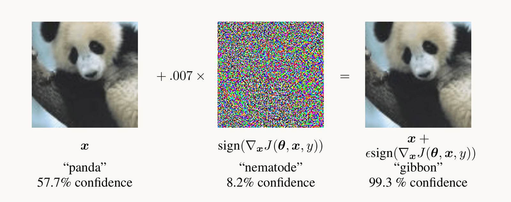
Goodfellow et al. 2015, Figure 1: a photograph of a panda, classified panda with 57.7 percent confidence, plus 0.007 times a colorful noise pattern, the sign of the gradient of the loss with respect to the pixels, equals an image that looks identical to the panda but is classified gibbon with 99.3 percent confidence.
Open full-size figure
- Nudge each pixel a tiny step along the gradient of the loss with respect to the pixels: "panda" becomes "gibbon", 99.3% confident; people see no change
- Adversarial training trains on such images: the robust ResNet-50 (next slide)
Slide 32
Three ResNet-50s, one architecture, three trainings
ResNet-50 drawn left to right as a chain of squares joined by arrows, each labeled with its map size. A 224 by 224 photograph of a tiger (the image), then conv1, a 7 by 7 convolution at stride 2, 112 by 112; max-pool, 56 by 56; layer1, 3 blocks, 56 by 56; layer2, 4 blocks, 28 by 28; layer3, 6 blocks, 14 by 14; layer4, 3 blocks, 7 by 7; global average, 1 by 1; and a readout box. The four block groups are outlined in magenta and the squares shrink from left to right. The point: 16 residual blocks in four groups, each group after the first halving the maps' height and width.
Open full-size figure- Supervised: ImageNet's 1.2 million labeled photographs; the network of the ResNet-50 slides
- DINO (self-supervised): no labels; two augmented views of one photograph must agree
- Robust: trained on adversarial examples (previous slide)
- Same architecture, three sets of weights. In the assignment: saliency of the standard and robust networks
Slide 33
Explainability
Accuracy tells you that a network works, not how. Two networks with the same score can rely on completely different evidence.
The gradient that fooled the network can also explain it. The rest of today: which parts of the image did the answer depend on, and how would you test that claim? As in a psychophysics experiment: change the stimulus, measure the response, and run a control.
Slide 34
Occlusion: cover a region and watch the score

Zeiler and Fergus (2014), Figure 7, three pairs side by side. Each pair is a test photograph with a gray square drawn on it, and to its right a map of the probability of the correct class as the square is moved over every position: red is high, blue is low. Pair 1, true label Pomeranian: a fluffy dog holding a green toy; the map is red everywhere except a blue patch where the square covers the dog's face. Pair 2, true label car wheel: the side of a racing car; the map is blue over the wheel on the right. Pair 3, true label Afghan hound: a man and a woman with a long-haired dog; the map is blue over the dog and red over the man's face. The point: covering the object, not its surroundings, lowers the network's probability.
Open full-size figure- An accuracy score cannot say which part of an image drove a decision. To find out, change the image and watch the answer
- Cover part of the image with a gray square, run the network again, and repeat at every position: an occlusion map of the correct class's probability
- Caveat: a gray square is an unnatural input. Part of a drop can come from the square itself, not from what it hides
Slide 35
Ways to ask which pixels mattered
An attribution map (or heat map): each image region's contribution to one class's score: its logit (the class's score before the softmax) or its probability. The class can be the network's answer or any class you name.
- All are local: they explain one decision on one image (what a unit does across all images is the next lecture). Today: occlusion, saliency, SmoothGrad and integrated gradients; Grad-CAM briefly
- Perturb and rerun: cover a region, measure the drop in the score: occlusion (previous slide)
- Gradient at the pixels: how fast the score changes as each pixel changes: saliency; averaged over many gradients to steady it: integrated gradients, SmoothGrad
- Gradient at the last feature maps: ask the last layer's coarse maps which of them push the score up, and where they fire: Grad-CAM
Occlusion asks what the decision loses without a region; saliency and Grad-CAM ask how the score would move if the pixels, or the top maps, changed a little.
Slide 36
Four maps of one decision
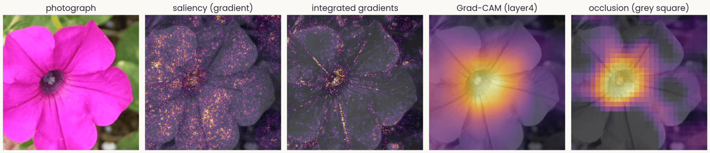
Five panels in a row, each 224 by 224 pixels. First, the petunia photograph: a pink flower with a dark center, a second flower in the lower right corner. Then four attribution maps for the class morning glory drawn in the inferno color scale over a grayed copy of the photograph, each scaled to its own 99.5th percentile. Saliency: fine bright speckle spread over the whole flower. Integrated gradients: credit concentrated on the dark center and along the petal veins and edges, with less speckle. Grad-CAM: one smooth bright blob on the dark center. Occlusion: a coarse grid of 32-pixel squares, brightest on the center. The maps agree on the center and differ in how fine they are.
Open full-size figure
Computed: the course's flower network (ResNet-50 + a linear readout for 102 flower species) · a test petunia it calls morning glory, probability 0.63
- All four maps are for morning glory, the network's answer (probability 0.63), which is wrong: the flower is a petunia. A map explains the network's answer, even when that answer is wrong. Saliency is speckled over the whole flower; integrated gradients concentrates on the center and the petal edges; Grad-CAM is one smooth blob on the dark center; occlusion is as coarse as its square, and agrees
Slide 37
Saliency: the gradient at the pixels
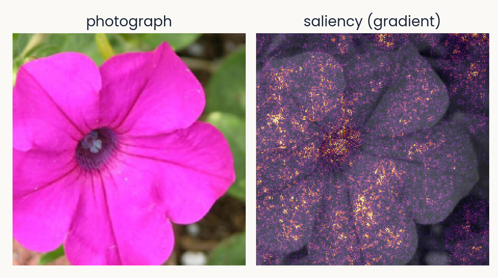
Two panels: the petunia photograph, and its saliency map for the class morning glory drawn over a darkened copy of the photograph, a speckle of bright pixels spread over the whole flower and densest at the dark center.
Open full-size figure
- : the logit for class , its score before the softmax. Here is the predicted class, not the true label. : the input image
- : the saliency map, one value per pixel: how much a small change there moves the score
- Computed by backpropagation, run to the input instead of to the weights: one forward pass, one backward pass, then the largest of the three color channels per pixel
Slide 38
SmoothGrad, and integrated gradients
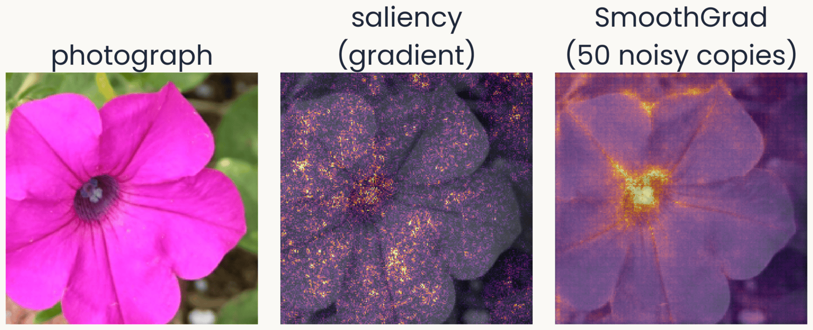
Two panels for the class morning glory on the petunia photograph: the saliency map, a fine speckle of bright pixels over the whole flower; and the SmoothGrad map, the average of fifty saliency maps of noisy copies of the photograph, smoother, with the flower's dark center and the petal edges standing out.
Open full-size figure
Computed: saliency, then SmoothGrad (50 noisy copies) · same network and photograph
- SmoothGrad: add a little noise to the photograph, 50 times; take the saliency map each time; average. This is not a blur of one map. The gradient jumps wherever a ReLU switches on or off; averaging removes the jumps and keeps the regions that matter in every copy. A smoother map is not necessarily a more accurate one: that has to be tested
- Integrated gradients: blend from a baseline (a blurred copy, or black) to the photograph and average the gradients along the way. In the assignment: saliency and SmoothGrad; integrated gradients only in the bonus
Slide 39
Grad-CAM: the gradient at the last feature maps
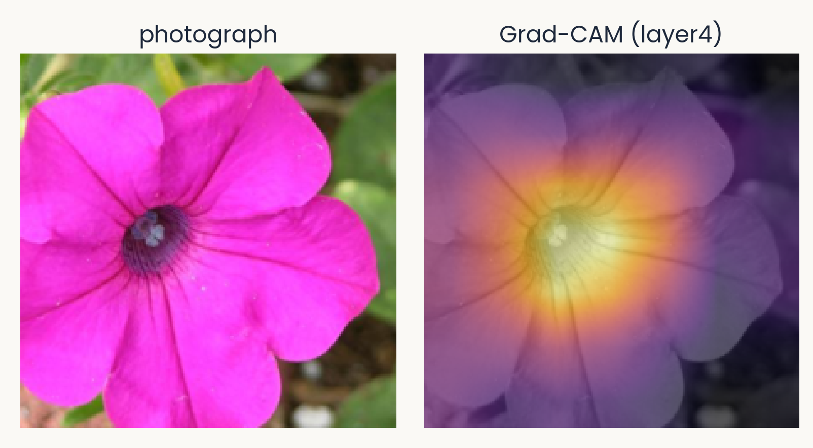
Two panels: the petunia photograph, and its Grad-CAM map for the class morning glory, one smooth bright blob centered on the flower's dark center and fading over the petals.
Open full-size figure
- : feature map of channel in the last convolutional layer , positions (7 × 7 here)
- : the channel's weight, the average gradient of the logit over the map's positions
- Weighted sum of the maps, negative values set to zero, enlarged to the image's size: channels that would raise the score get positive weights, and their maps say where they fire
Slide 40
Testing a map, and more methods: pointers
- Change the image and look at the score: inpaint (fill in from the surroundings) the map's region and compare with a same-shape control elsewhere (next slide)
- In future lectures: deletion curves (remove pixels in the map's order; a good map makes the score fall fast), the randomization sanity check (a map that survives random weights did not come from learning), why a map shows where, not what (texture against shape), and how a map plus an edit catches a shortcut
- A map is a hypothesis about one decision. Editing the image, with a control, tests it
Slide 41
Test the map: change the image
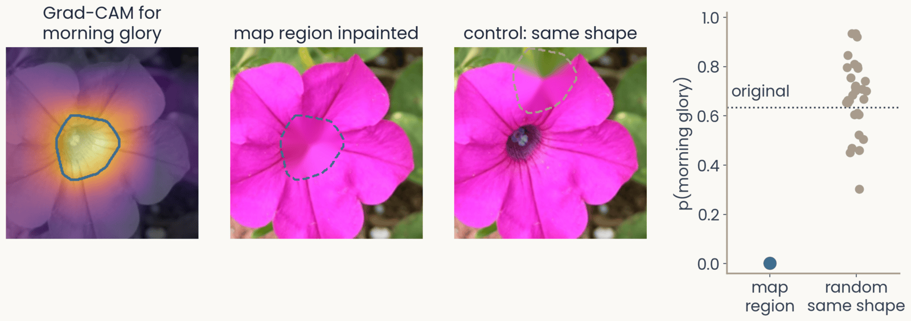
Four panels testing the Grad-CAM map. Panel 1, Grad-CAM for morning glory, with the brightest region, the flower's dark center, outlined in blue. Panel 2, map region inpainted: the same photograph with that outlined region filled in from its surroundings, so the center becomes smooth magenta petal. Panel 3, control, same shape: the same outline inpainted on a petal near the top, the center left intact. Panel 4, a dot plot of the probability of morning glory, from 0 to 1.0: one blue dot at 0.00 for the map's region, and 30 gray dots for random same-shape controls spread between 0.30 and 0.93, around a dotted line marking the original 0.63. The point: removing the region the map highlights removes the decision; removing an equal area elsewhere does not.
Open full-size figure
Computed: same network and photograph · map region: the top 6% of map values, largest patch, grown to 8%
- Inpaint the map's region (fill it from its surroundings); control: the same shape elsewhere, 30 times
- Probability 0.63 → 0.00; controls 0.30 to 0.93. Here the decision depended on the map's region
Slide 42
Recap
- Simple and complex cells became convolution and max-pooling. The ventral stream: anatomy orders V1 → V2 → V4 → IT, cells prefer more complex things at each stage, responses start later at each stage
- HMAX set the two operations from physiology and predicted data it was not fit to; networks then learned them from labels at scale
- ResNet-50: residual blocks, BatchNorm (keep frozen layers in evaluation mode), fine-tune
layer4; one architecture, three trainings (supervised, DINO, robust = trained on adversarial examples) - Attribution maps (occlusion, saliency, integrated gradients, SmoothGrad, Grad-CAM) say which pixels moved one class's score, for the class the network chose or any class you name
- Edits with a control test a map: inpaint the region, compare with same-shape controls; deletion curves and sanity checks come in future lectures
Slide 43
Further reading for the research trail
Optional: a few research-trail entries over the semester. Any paper mentioned in any lecture qualifies.
- Colin, Fel, Cadène & Serre NeurIPS 2022: maps help people predict a model only sometimes
- Hermann, Mobahi, Fel & Mozer ICLR 2024: which shortcut a network takes depends on how easy the cue is to extract
- DeGrave, Janizek & Lee Nat Mach Intell 2021: COVID-19 classifiers that used hospital marks
- Zimmermann, Klein & Brendel NeurIPS 2023: larger networks are not easier to interpret
- Kantamneni et al. ICML 2025: sparse autoencoder features rarely beat a linear readout
- Fel et al. NeurIPS 2023: MaCo, the feature-visualization method of the next lecture
Slide 44
Minute paper
Submit on Canvas → Minute papers → Minute Paper 13 (access code read out in class).
Write three brief points in your own words:
- Name two of the three kinds of evidence that the ventral stream is organized as a hierarchy, and say in one sentence what each shows.
- Something you do not yet understand, or a question still open
- Another idea you found interesting, and why it matters for brains, behavior or AI
Credit for a thoughtful attempt, not for being correct.
Slide 45
Going further: more of the network
Optional reading: stride and padding, VGG, residual blocks, batch normalization, training and evaluation modes
Slide 46
Stride and padding set the size of a map

Two panels showing how stride and padding set the size of a feature map. Left: a 5 by 5 input surrounded by one ring of zeros (padding 1), making a 7 by 7 grid. A 3 by 3 filter window, outlined in magenta, sits at the top-left; a dashed copy one column to the right is labeled stride 1. An arrow leads to the output, a 5 by 5 grid. Right: the same padded input, with the dashed window moved two columns, labeled stride 2; the output is 3 by 3. The point: a larger stride makes a smaller map, and padding lets the filter sit on the border.
Open full-size figure- Stride : how far the filter moves between positions; stride 2 halves the map, so a unit of the next layer reads a wider patch of the image: the receptive field grows, as from V1 to IT
- Padding : rows and columns of zeros around the input, so the filter can also sit on the border
- Output size for a filter: . ResNet-50's first layer: 224, , , , gives 112
Slide 47
VGG (2014): small filters, stacked
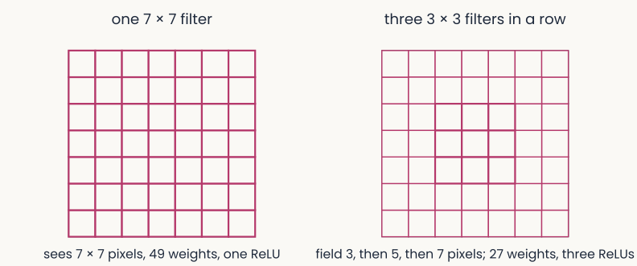
Two diagrams. Left: a single 7 by 7 grid of weights, labeled one 7 by 7 filter: it sees 7 by 7 pixels, 49 weights, one ReLU. Right: three nested grids of 3, 5 and 7 cells, labeled three 3 by 3 filters in a row: the receptive field grows from 3 to 5 to 7 pixels with 27 weights and three ReLUs.
Open full-size figure
- Simonyan & Zisserman (2014) used only 3 × 3 filters, 16 to 19 layers deep. Three 3 × 3 filters in a row see the same 7 × 7 patch as one large filter, with 27 weights instead of 49 and two more nonlinearities
- Deeper for less: 92.7% top-5 on ImageNet, and the first-layer filters still come out Gabor-like
Slide 48
Deeper networks: add the input back

A residual block drawn top to bottom. The block input, bold A, enters three stacked boxes: a 1 by 1 convolution with BatchNorm and ReLU, a 3 by 3 convolution with BatchNorm and ReLU, and a 1 by 1 convolution with BatchNorm. A magenta bracket labels the three boxes 'F of A: the change the block learns'. A green line, the skip connection, carries A unchanged around the boxes to a plus node, where it is added to F of A. A ReLU follows, and the block output is g of, A plus F of A. The point: the block learns only a change to its input, so the input can pass through when no change is needed.
Open full-size figure- Stacking more plain layers made networks harder to train: a 56-layer network reached higher training error than a 20-layer one
- A residual block computes a change and adds it to its input: output . The added path is a skip connection
- If a block is not needed, its change can stay near zero and the input passes through: networks of 50 to 152 layers trained well
- Each convolution is followed by BatchNorm, explained on its own slide
Slide 49
Normalization, from cortex to networks
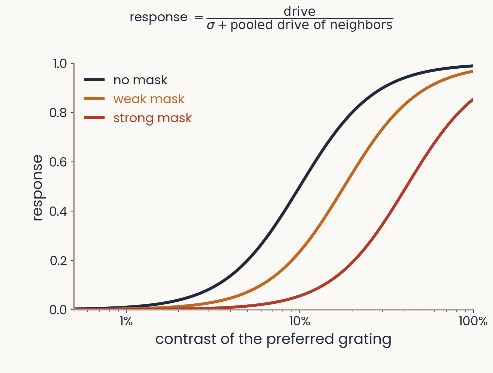
Response of a model neuron against the contrast of its preferred grating, on a log axis, for three masks. Without a mask the response rises from 0 near 1 percent contrast to almost 1 at 100 percent; a weak and then a strong mask shift the curve to the right, so the same grating drives a weaker response. Above the plot: response equals drive divided by sigma plus the pooled drive of neighbors. Computed from the normalization model of Heeger 1992 and Carandini and Heeger 2012.
Open full-size figure
Computed from the normalization model; schematic
- Divisive normalization: a neuron's drive is divided by the pooled activity of its neighbors. A mask that drives the pool lowers the response at every contrast; found from the retina to cortex
- HMAX's S1 divides each filter response by the energy of the image patch. AlexNet normalized across neighboring channels (local response normalization)
- BatchNorm (2015, standard since ResNet) divides each channel by its spread over a minibatch: a simplified normalization, chosen because it speeds training
Slide 50
Batch normalization

Three histograms stacked vertically, all on the same horizontal axis of activation value from minus 10 to 10, for one channel of ResNet-50's first layer over 64 Imagenette photographs and every position. Top, in blue, before normalization: mean minus 0.81, standard deviation 3.19, a sharp peak near zero with long tails out to about minus 10 and 10. Middle, in gray, after subtracting the batch mean and dividing by the batch standard deviation: mean 0.00, standard deviation 1.00. Bottom, in magenta, after the learned scale gamma and shift beta: mean 0.58, standard deviation 0.36, a narrow peak just above zero. A dashed line marks each mean. The point: BatchNorm standardizes each channel, then rescales it with learned values.
Open full-size figureComputed: ResNet-50, 64 Imagenette photographs
- As training changes the weights of earlier layers, the scale of each channel's values drifts. Batch normalization (BatchNorm) rescales every channel, layer after layer
- For each channel: subtract the mean and divide by the standard deviation (s.d.) of the current minibatch (all its images and positions), then apply a learned scale and shift
Slide 51
Training mode and evaluation mode

A flow diagram in two rows. Top row, training mode, model.train(): a box 'a minibatch of images' leads to 'batch mean mu-B and variance sigma-B squared', then to 'normalize, then gamma and beta', then to the next layer. A blue arrow labeled 'updates' runs down from the batch statistics to a yellow box, 'stored running mean and variance'. Bottom row, evaluation mode, model.eval(): 'images to classify' leads straight to 'normalize, then gamma and beta' and the next layer, with a gray arrow labeled 'used' coming from the stored running mean and variance. The point: training normalizes with each minibatch's own statistics; evaluation uses the stored ones.
Open full-size figure- Training mode normalizes with the minibatch's own statistics, and updates a running mean and variance: averages over the training batches
- Evaluation mode (
model.eval()) normalizes with those stored values instead - The stored values are not weights: no gradient changes them.
model.eval()does not turn gradients off